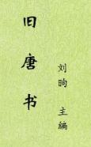

| 历史史籍 > |
| 旧唐书 |
| 作者：[后晋]刘昫 主编 |
|
旧唐书，本名《唐书》，纪传体断代史，本纪20卷、志30卷、列传150卷，共200卷。成书于后晋开运二年（945年），署刘昫撰。《旧唐书》前后由赵莹、刘昫监修，参与编修的有张昭远、贾纬、赵熙、王伸、吕琦、尹拙、崔棁、郑受益、李为先9人。其中，张昭远始终具体负责。 宋仁宗庆历年间起，朝廷认为《唐书》芜杂不精，另命宋祁和欧阳修编撰唐书。嘉祐五年（1060年）修成，开始“布书于天下”是为《新唐书》，从此，署名刘昫所编的《旧唐书》遂不再流传。明嘉靖十七年（1538年），浙江余姚人闻人诠在苏州征借到当地人士所藏《旧唐书》，请苏州府学训导沈桐在苏州府学里对书稿作校对并开版印刷，经历了四百七十八年坎坷命运的刘昫《旧唐书》，才又得到重新刊行。 [2018-12-28，重新整理] |
 |